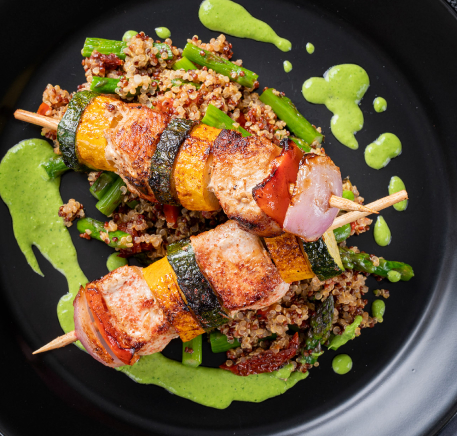
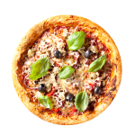
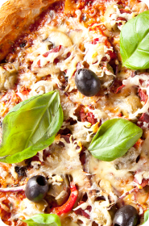
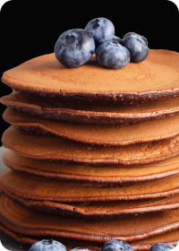

Learn to Cook Tasty Treats' Customizable Masterclass
TastyTreats - Customize Your Meal with Ingredient Options and Step-by-Step Video Guides.








...
- Beef
- Breakfast
- Chicken
- Dessert
- Goat
- Lamb
- Miscellaneous
- Pasta
- Pork
- Seafood
- Sushi
- Exotic
- Dinner
- Vegetarian
Popular recipes
-

French Omelette
A French omelette is a simple yet elegant dish made with whisked eggs, butter, salt, and pepper, cooked gently until light and fluffy, then folded over and served for a comforting and refined meal any time of day.
-

Squash linguine
Squash linguine is a flavorful and nutritious pasta alternative made with spiralized squash noodles, paired with a variety of delicious sauces and toppings for a satisfying and healthy meal.
-

Baked Salmon
Baked salmon is a flavorful and nutritious dish featuring tender and moist fillets seasoned with a blend of lemon juice, garlic, and olive oil.
-

Sugar pie
Sugar pie is a traditional Canadian dessert made with a rich and buttery filling of brown sugar, cream, and flour, poured into a flaky pastry crust and baked until golden brown.